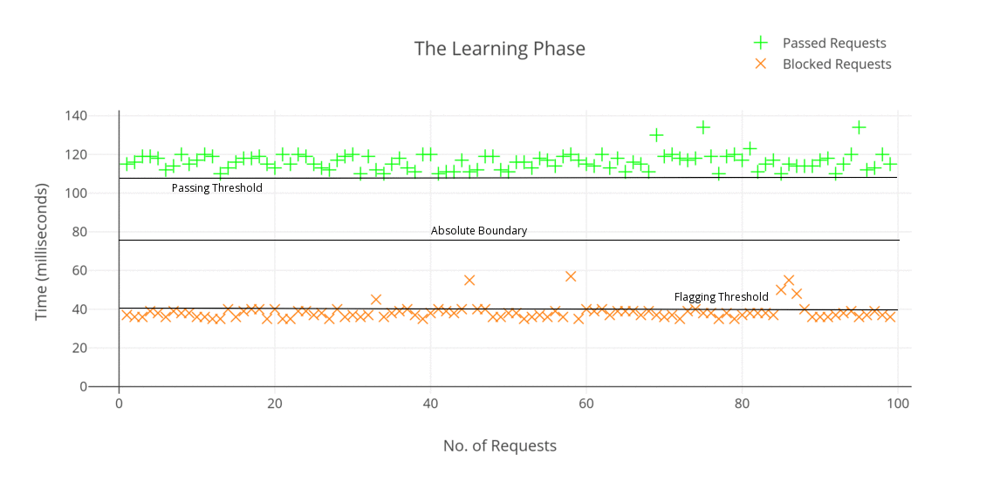
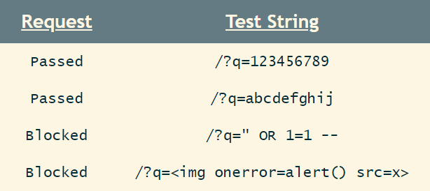
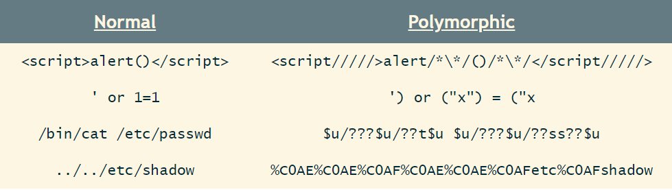
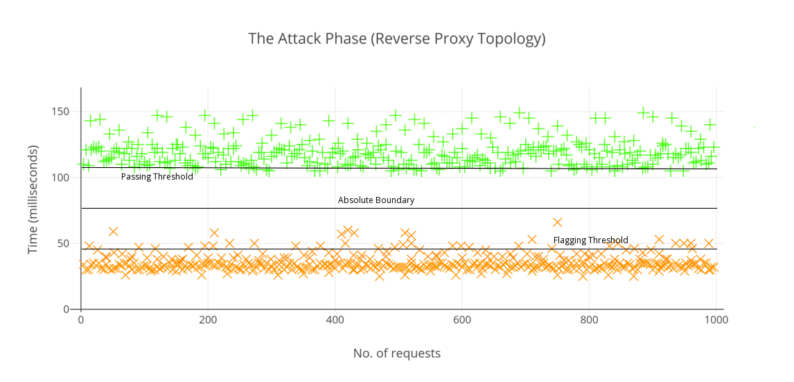
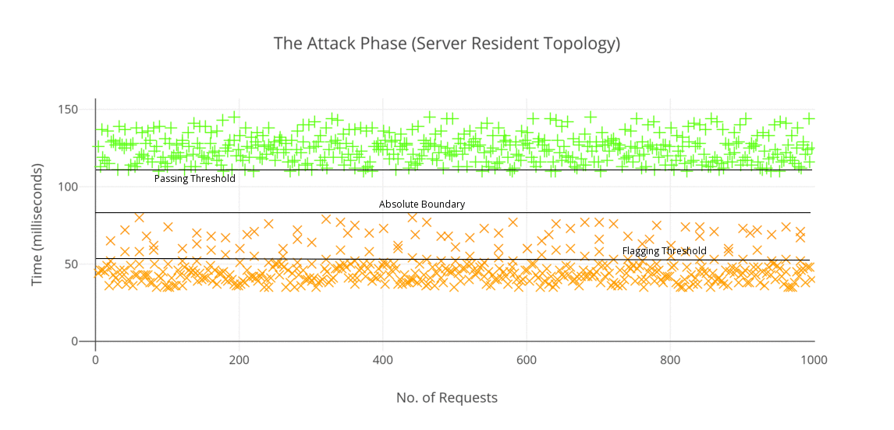
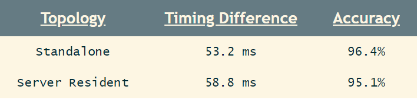

Fingerprinting WAF Rules with Timing Based Side Channel Attacks
Hi folks,
Today in this post I am going to be detailing about my recent experiments with web application firewalls (WAFs) focusing on a specific type of side channel attacks, namely, timing. In my opinion, this field hasn’t been studied actively and the results can be more lethal than you’re expecting. This post is already long, so lets get started rightaway. :)
Side Channel Attacks?
Wikipedia defines side-channel attacks as:
An attack based on information gained from the implementation of a computer system, rather than weaknesses in the implemented algorithm itself.
So basically we are extracting/learning sensitive info which shouldn’t be known to the public using side channel attacks. This is achieved usually due some faulty business logic implementations which are vulnerable to this kind of enumeration attack.
The attack we are going to talk about today is based on the clock. A timing attack focuses on the data movement in and out of the CPU/memory on the hardware running the system or algorithm. Simply by observing time-variations on how long the CPU is taking to analyse data being fed into it, one can enumerate internal sensitive information from the system.
Web Application Firewalls
Well as you know, web application firewalls are used to detect and block attacks against vulnerable web applications. Besides blocking rogue inbound requests, WAFs are often used to “cloak” those outgoing responses that contain sensitive information such as error messages or stack traces. WAFs usually distinguish between a normal and rogue request via a set of regular expressions called filter rules.
Why Fingerprint ’em Rules?
Our target here is to find loopholes within the ruleset of the WAF. So basically by fingerprinting the rules of a WAF, one is actually able to detect what kind of filter strategies are being actively used and the attack methodology can be adapted in a way such that it evades the WAF. Once a specific bypass for the WAF has been crafted, the attacker can further exploit existing vulnerabilities within the web application.
Here in this article I have used a common method of rule fingerprinting known as regex-reversing which typically relies on examining every single component of a request to understand which part of the request is causing the block.
Understanding The Setup
Typically, a WAF is deployed in the following 4 network topologies:
- Reverse Proxy: The WAF literally sits between the client and the server, intercepting requests. The client connects directly to the WAF and then the WAF passes the query (if normal) to the server. In case of a blocked request, the query never reaches the server.
- Server-Resident: This is the setup when a WAF is typically installed on the server it is protecting. This can be further categorized into 2 topologies, the first being that the WAF is installed as a plugin, while the second one is when the WAF is installed as a programming library.
- Out-of-Band: In this case, the WAF usually gets a copy of the traffic via a monitoring port on a network device. This mode of implementation limits the WAF’s ability to block a request and can only send TCP-reset packets to interrupt traffic whenever a malicious query is detected.
- Cloud-Deployment: This setup comprises of the WAF functioning within the network cloud of the provider. The working is similar to reverse proxy setup, with the exception that every single request to the server has to pass through the network cloud.
In my experiments, I took up two most commonly used implementations of a WAF, namely, the reverse-proxy and the plugin-based server resident setup.
Conventional Methods of WAF Fingerprinting
Typically, any WAF is identified via unique headers, cookies, blocked responses like status code, response phrase/reason and the page content. There are many brilliant WAF fingerprinting/bypassing tools, eg. WAFW00F, WAFNinja, etc. They usually exploit storage side channels to fingerprint rules within a WAF (whether a request has been blocked or accepted) and further bypass them. All these tools can possibly observe are:
- WAF Block Message: Signifying that the WAF has flagged and blocked the request as malicious. Usually the blocked response page or a header defines that the request has been blocked. Sometimes the response status code (403 Forbidden) indicates a blocked request too.

- Web-App Error Message: Signifying that the web-app bugged out upon the request. However the error message gets cloaked by the custom block page of the WAF. In this case, the WAF did not block the request, but only cloaked the error message of the web application to prevent sensitive information disclosure via stack traces, etc.
- Normal Response: Signifying that the request has clearly passed through the WAF to the web server. However, there remains a possibility that the WAF intercepted the request and removed the malicious part of the request before passing it onto the server.
The Main Drawback
So as you may have just noticed, that just from observing only responses, one cannot explicitly distinguish between a passed and a blocked request (pts. 1 and 2), owing to the fact that WAF block pages can be observed in both cases of rejected requests as well as internal web-app error messages (which get cloaked by the WAF).
Why Timing Attacks?
The solution to the above-mentioned drawback would be this new methodology based on timing attacks. By making use of timing attacks, one can tell if a request results in a certain response, i.e. gets blocked or is passed; for web-app error messages, it is simply ignored due to the response timing being far greater to those of passed requests. My experiment result statistics state that we can precisely fingerprint blocked and passed requests with an accuracy over 95%.
Idea of the Attack
Principle
The main principle being this attack technique is the fact that a blocked malicious request takes less time (in order of milliseconds) for a response than a passed normal request. The rejected requests finish earlier than a passed request because the discarded ones are never processed by the server. Thus, the timing difference between a blocked request and a passed request equals the processing time of the application logic.
Assumption: The only assumption here is that our WAF blocks a request and returns an error message immediately upon detecting a malicious request. Other WAF variants which strip the malicious parts of a request and forward the sanitized request to the server are not being taken into account.
The Approach
So to distinguish between a blocked and a passed request we’ll need two different types of requests, a normal clean request which will, without any trouble get passed through the WAF. The second type is the malicious kind containing a payload string like <script>alert()</script> which will get detected easily.
Our approach to this problem initially would be to first split the attack into two phases :-
- Learning Phase: In this phase we measure and learn what could be the possible response time for a blocked and a passed request for further reference in our attack phase.
- Attack Phase: In this phase we perform the actual tests, i.e. the rogue requests are being sent for the final results and further statistical analysis.
Now, comes the computation methodology. In the learning phase, first off, we measure the response times 〈Tₙ = t₁, t₂, … tₙ 〉 of n blocked requests and define a “flagging threshold”. This flagging threshold will serve as a future reference when it comes to determining whether a request passed or got blocked. It can be represented as:
Similarly we define a “passing threshold” by taking n passed requests where the boundary can be defined by taking the minimum value of all the response times of requests which got past the WAF undetected. This threshold can be represented as:
where in both cases δ signifies that, the actual passing/blocking boundaries can be slightly less than that of the measured values due to possible network latency or noise.
So now theoretically, our flagging and passing boundaries’ timings should serve as a threshold for blocked and passed requests, while practically this is not replicable due to the obvious noise in the network. Thus we take up the mean of both blocking and passing boundaries to get an absolute boundary which can give the actual threshold value about the response time for a blocked as well as a passed request.
Clearly, any timing measurement for a request with t ≥ tᵦ is a passed request while t < tᵦ is a blocked request. However, any request with response time near to the boundary tᵦ may denote a passed request with low noise or a blocked request with high noise. To rule this out, the attacker needs to amplify this attack vector. We’ll discuss more about this, read on.
Performing the Experiment
The Setup
To replicate the above theory, I took up two most commonly implemented topologies of WAF setups, i.e. a reverse-proxy based and a server-resident (plugin type) based topology. I hosted the setups on my own server and replicated them exactly the way they would be implemented in real life. To test the approach I chose Shadow Daemon, owing to its open-source, low rules maintenance nature. Also, it is pretty much easy to setup, so porting the code to work as a plugin was not too difficult.
The Learning Phase
I wrote up a small python script which starts with the learning phase by repetitively sending normal and malicious requests one after another with a time delay of 2 seconds between each request. A total of 200 requests were used among which a hundred consisted of normal requests while the other half contained malicious strings within them. The learning phase yielded an absolutely clear picture of how effective is this method.
Some examples of passed and blocked/rejected requests are:
You may notice that some of the requests in cases of blocked requests crossed the flagging boundary. This is probably due to the internet connection suffering packet losses or network congestion. However, it can be noted clearly that there is no request crossing the absolute boundary on either side.
The Attack Phase
Time for the actual test. In this phase, a set of most common malicious payloads are collected for testing against the target. Now the idea here is to generate sequences of polymorphic payloads by gradually adding different obfuscation cases to the query strings for various contexts. Polymorphic payloads work exactly the same way as malicious payloads (semantically identical) but are syntactically different/obfuscated so that the firewall regex cannot detect it. We will discuss more on this topic in another article but for now lets just keep to a small example:
Now a series of such requests are sent over to the the server hosting the WAF, and the response times are recorded. To further validate the claims of the experiment, both response status codes as well as the block-pages are recorded. A correctly identified malicious request would result in a 403 status along with the blockpage as response content.
On the reverse-proxy setup, the results were pretty much as expected. There was a minimum time gap of 53.2 ms between a flagged and passed request. The results indicate that in 96.4% of cases, we are able to correctly distinguish between a blocked and a passed request. Thus, we can safely say that the accuracy and reliability of our method for this topology is high enough to assert that any attacker can reach perfect measurement conditions with only a few repetitions.
In the case of the server resident setup (plugin based), I actually did not expect the results to have such distinctive result, however I was surprised to see that the method works quite well as it does in case of reverse-proxy topology. Something worthwhile I noticed in this setup is that the overall timing difference between a blocked and a passed request (58.8 ms) turned out to be greater than the previous topology (53.2 ms). The results obtained for this topology are visualized are as below:
Thus we can safely say that our timing attack clearly distinguished blocked and passed requests in 95%+ of cases. A short summary of my experiment is as below:
Downsides of the Method
The main drawback of this method is that any attacker needs to send a large amount of requests to find loopholes within a WAF rule-set. On top of this, we have the network noise/jitter issue as a big obstacle causing the measurements to falter. Another factor we can add to this list is the server load, which can both be additive or multiplicative depending upon the nature how the server handles the requests. Modern well-furnished WAFs often implement a security mechanism where the IP of the client gets blocked infinitely/for a limited time whenever the WAF detects a malicious string within a request. This limits the ability of this method greatly. We can. however we can get around this with another technique.
Dealing with It
The obvious solution to this kind of problem is to perform more and more tests distributed over a reasonable time until we obtain an average result, which rules out the remaining queries with large response times. Also since network noise is strictly non-negative, this does actually work owing to the nature of our attack vector, i.e. testing for Boolean values. In cases of WAFs blocking the IP address of the client, IP rotation attacks as well as cross site timing attacks are highly effective to bypass the ugly scenario of getting an IP blocked. In many cases, putting a time delay between consecutive requests also helps.
Amplifying the Attack
So how can we amplify this attack vector? Lets see:
1. Choosing a Longer URL Path
When a resource is queried from a server, it is processed by the server CPU, different components are accumulated together (eg. images, CSS, etc) and then served to us via response. Thus we can choose a URL path whose response content is the lengthiest among all other URL paths (eg. for a blog site, we can choose articles with the maximum number of images), causing more load on the server CPU. More the time taken by the server to process a request, more the effectiveness of the attack.
2. Denial of Service Attacks
Secondly, we can combine the process with various denial of service attacks like submitting search boxes with large queries, sending POST requests with large content, hash collisions attacks (HashDoS), etc. The longer the fingerprinting takes, the lesser is the effect of noise on the measurements.
3. Cross Site Rule Fingerprinting
Finally, we can chain our fingerprinting process with cross-site request forgery (CSRF) attacks which would require an attacker to lure users to a site where he can embed some HTML and JavaScript to do the measurements for the user and record the results for him. An example of such arrangement is as below:
<html>
<body>
<img id="test" style="display: none">
<script>
var test = document.getElementById(’test’);
var start = new Date();
test.onerror = function() {
var end = new Date();
alert("Total time: " + (end - start));
}
test.src = "http://sitename.tld/path?" + parameter + "=" + payload;
</script>
</body>
</html>
In the code shown above, we create an invisible img tag. Just before we duplicate the payload to the URI of the image, we start recording the time. Since the image is invalid, the browser will fire an onerror event handler and the relative function will be executed when the time recording stops and an alert box with the recorded time will be popped up.
There are three main advantages to this method:
- First, the attackers identity remains concealed. Since multiple users will be sending requests to the server with the WAF, it is virtually impossible to distinguish who is the actual actor behind this.
- This method absolutely overrules the impact of WAFs blocking IP addresses as a counter security measure.
- Also, it is notably important to state that this method works reliably only with timing based attacks. Sometimes SOP (Same Origin Policy) might restrict reading page content from other origins. So, in such situations, one may not be able to observe the blockpage and fingerprint the WAF using storage side channels.
Conclusion
So here we conclude. This attack vector highlights the effectiveness of timing based side channel attacks on the web and also the importance of WAF developers writing bullet-proof ruleset. In this small endeavor of mine, I discovered several bypasses and loopholes within the ShadowD WAF ruleset, and in my next article, I might be writing about the bypasses I found.
So far, thanks for reading. Cheers! 🥂